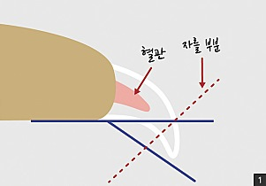
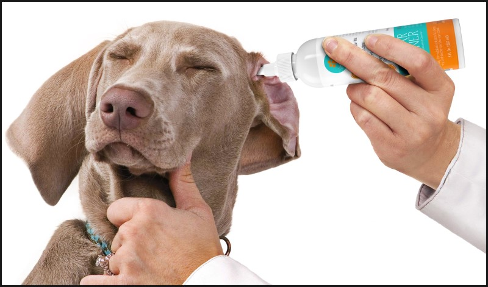
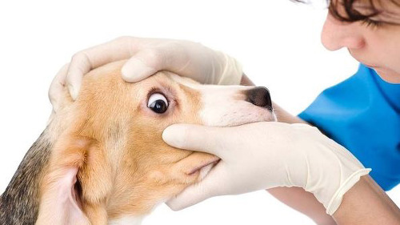

위 생 관 리
우리 아이들을 청결하게 관리해요!

발톱깎기
발톱손질을 실외에서 키우는 개들이라도 주인이 주기적으로 신경을 써줘야합니다. 특히 실내에서만 생활하는 개들을 발톱이 쉽게 닳지 않으므로 빨리 자라게됩니다. 발톱이 지나치게 자라게 되면 걷기가 힘들고 다리에 통증이 오기때문에 제때 잘라주는 것이 중요합니다.

귀청소하기
귓병의 첫 신호는 바로 귀에서 나는 냄새입니다. 그러므로 항상 냄새를 맡아보도록 합니다. 귓병 예방을 위해서 가장 중요한 것은 바로 청결입니다. 개의 귓속은 항상 축축한 상태로 균이 번식하기에 최적의 조건이기에 꼼꼼한 청소가 필요합니다.

눈닦아주기
강아지 눈은 매우 약합니다. 충혈이 되었는지, 털이나 먼지 등의 이물질이 들어가 있는지, 항상 확인하고 청결하게 손질해주세요. 눈물을 많이 흘리거나 분비물을 그냥 방치했을 경우 청소를 해주지 않으면 냄새가 나거나 안구질환을 불러일으킬 수 있으니 눈물자국도 잘 닦아주세요.